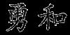
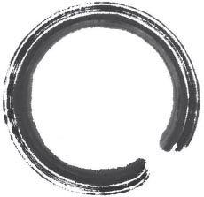

Chương 23

Bất thình lình, cửa mật đạo bật tung ra. Đang chuẩn bị tinh thần đối phó với Kazuki, Jack không khỏi ngạc nhiên khi ngoài ông cụ thì chẳng còn ai nữa.
“Chúng đi rồi,” ông tuyên bố.
Không dám tin là mình lại may mắn đến vậy, cảm giác nhẹ nhõm của Jack nhanh chóng tắt ngấm khi Benkei ngã lăn ra đất bất tỉnh.
“Nói chuyện để sau, cứu người quan trọng hơn,” ông lão nói rồi cùng Jack đưa Benkei đặt lên giường ở căn phòng kế bên. Rất cẩn thận, ông rửa sạch rồi đắp thuốc lên miệng vết thương, sau đó cho Benkei uống một bát thuốc lá. Bài thuốc này tỏ ra khá công hiệu, tiếng rên rỉ đau đớn của Benkei nhanh chóng chuyển thành tiếng thở đều.
Biết Benkei đã qua cơn nguy kịch, ông lão dẫn Jack trở ra phòng khách.
“Chắc cậu đói lắm hả?” Ông nói rồi chui luôn vào bếp.
Trong lúc chờ đợi, Jack đặc biệt chú ý đến cuộn giấy treo giữa phòng. Hai chữ Hán trên đó như thể mang theo cả cơn giận dữ của người viết vậy. Căn phòng cũng không trang trí gì nhiều, ngoài cuộn giấy này, và bình hoa đặt trong trong góc.
“Đảm Oa,” ông lão dịch hai chữ Hán.
Jack quay lại thì thấy ông vừa trở ra với một tô mì và một ấm trà nóng hổi. Ông lão khuỵu gối đưa tô mì và cặp đũa cho Jack. Nó cúi đầu tỏ ý cảm ơn rồi bắt đầu bữa ăn tuy đơn giản nhưng vô cùng đáng giá này.
Vừa uống trà, ông lão vừa giải thích ý nghĩa của cuộn giấy. “Nhiều năm trước, một vị lãnh chúa dẫn quân ra chiến trường thì bị một chú ếch kiên quyết chặn giữa đường. Ấn tượng bởi tinh thần quả cảm của chú ếch, vị lãnh chúa yêu cầu các binh sĩ của mình phải lấy đó làm gương. Bức thư pháp này chính là muốn diễn đạt tinh thần ấy.”
Jack cũng nhâm nhi uống trà bình luận. “Quả là một chú ếch can đảm.”
“Can đảm như cậu vậy,” ông lão khen ngợi. “Ta tên là Shiryu, và ngôi nhà sẽ luôn chào đón cậu.”
Jack cúi đầu. “Trước hết, cháu xin cảm ơn ông đã khai ân cứu mạng. Người bạn bị thương kia là Benkei, còn cháu...”
“Ta biết cậu là ai”, ông cụ mỉm cười hiền hậu. “Nghe đám người kia hô hào thôi là đủ. Jack Fletcher, võ sĩ ngoại quốc tiếng tăm lẫy lừng. Chứ không cậu nghĩ vì sao ta lại tự nhiên mở cửa ra như thế?”
Jack thật sự kinh ngạc. “Ông có biết che giấu cháu là hành vi chống lại triều đình không?”
Shiryu bình thản gật đầu. “Ta không quan tâm đến cái gọi là trung thành với Shogun, nhất là từ sau cái chết của bà ấy thì lại càng không.”
“Xin chia buồn với mất mát của ông,” Jack đặt tách trà xuống, tụ hỏi không biết triều đình của tân Tướng Quân còn làm hại cuộc sống của bao nhiêu gia đình như thế này nữa. “Chuyện gì đã xảy ra?”
Shiryu đưa mắt nhìn bình hoa li đặt ở góc phòng. “Yuri bị đem đi thiêu sống chỉ vì theo đạo Ki Tô,” ông nói bằng giọng buồn man mác. “Thế nhưng tinh thần của bà ấy vẫn tồn tại. Và dù không phải là người bên đạo, ta vẫn xem việc giúp đỡ những người đồng giáo với Yuri là trách nhiệm của mình.”
“Cháu hiểu những trăn trở của ông,” Jack chỉ dám tưởng tượng ra nỗi đau của người đàn ông khi phải chứng kiến vợ mình bị người ta giết hại một cách tàn nhẫn. “Chúng cháu chỉ cần nghỉ một đêm, sáng mai sẽ lập tức lên đường.”
“Đừng từ chối,” Shiryu nhấn mạnh. “Cứ ở lại đây cho đến khi vết thương của bạn cháu khỏi hẳn.”
“Nhưng những kẻ vừa rồi không dễ gì từ bỏ đâu ạ. Không tìm được cháu trong rừng, nhất định Kazuki và đồng bọn sẽ quay lại đây ngay.”
Shiryu tự tin lắc đầu. “Ta đã chỉ cho chúng đi về hướng bắc đến chỗ các hang động. Từ đó có rất nhiều đường để một người có thể trốn thoát. Hơn nữa, ở đây ta là người được trọng vọng. Bọn chúng không dám manh động đâu.”
Ông uống nốt tách trà rồi dẫn Jack vào phòng trong. “Yên tâm, Jack Fletcher. Ở đây cậu sẽ được an toàn.”
Jack bị đánh động bởi một tiếng hô vang. Sợ điều xấu nhất ấy xảy ra, nó vội vàng cầm kiếm chạy ra ứng phó. Hành lang và phòng khách không có người. Lại một tiếng hô nữa phát ra từ phía vườn. Mở tung cánh cửa giấy, Jack lao ra giữa ánh sáng bình minh.
Khác với tưởng tượng của nó, khu vườn vẫn yên bình vắng lặng.
Được chăm sóc tỉ mẩn, khu vườn của cụ Shiryu tuy nhỏ nhưng đầy đủ từ cây cối, bụi rậm, cho đến đá tảng, và hồ cá koi [10] đủ màu có hệ thống dẫn nước giả thác. Giữa vườn là một mái vòm đơn giản lợp ngói xanh. Nhìn kĩ, Jack mới nhận ra ông Shiryu đang quỳ gối bên trong, tay cầm bút lông đã nhúng mực. Ông cụ hô vang rồi cúi người về phía cuộn giấy trải dài trên chiếc bàn thấp. Dùng bút như dùng kiếm, từng nét của ông đều mang đến cảm giác chắc chắn, uy lực, mực văng ra cao đến tận mái hiên. Viết xong, ông lại trở về tư thế ban đầu, từ từ đánh giá thành quả của mình.
Phát hiện ân nhân cứu mạng chính là nguồn gốc của những âm thanh náo động vừa rồi, Jack nhẹ nhõm tra kiếm vào bao rồi bước qua cầu đá đến chỗ mái vòm. Thấy nó, ông Shiryu mỉm cười khoe cuộn giấy thư pháp vừa hoàn thành. Jack không thể đọc được hai chữ Hán viết liền nhau theo kiểu cách điệu này.
“Tĩnh mà động,” ông cụ giải thích.
Jack rất ấn tượng về mặt nghệ thuật, nhưng về ý nghĩa thì nó thực sự thấy mơ hồ.
“Hãy quan sát hồ nước,” ông Shiryu nói khi thấy vẻ mặt khó hiểu của nó. “Bầy cá koi đang bơi lội rất hăng say, ấy vậy mà mặt nước vẫn tĩnh lặng. Tĩnh mà động. Bài học rút ra là: muốn chuyển động thật nhanh, thì phải xuất phát từ nền tảng vững chắc. Đó cũng chính là tinh thần của Shodo, thư đạo.”
Rồi ông lại trải cuộn giấy ra bàn.
“Như đám cá trong lòng hồ, những dòng chữ này nằm yên trên giấy, nhưng vẫn làm cho người ta có cảm giác đang chuyển động.”
Jack gật đầu công nhận. Đúng là bức thư pháp này có gì đó rất chân thực, như thể lá trên cành hay bóng người dưới nước vậy.
“Để làm ra những tác phẩm như thế này, cành cọ trên tay người nghệ nhân phải đạt tới độ uyển chuyển và linh hoạt cao nhất. Chắc cậu cũng biết, Hán tự được kết cấu bởi những đường nét theo thứ tự nhất định, liền mạch với nhau, tạo thành một “nhịp độ” không thể bị đứt gãy, nếu muốn cho chữ thật sống động.”
“Vậy thì những tiếng hô mang ý nghĩa gì?” Jack thắc mắc. “Cháu tưởng thư đạo được dùng như một phương pháp tĩnh tâm chứ?”
“Ta làm vậy là để tập trung khí.” Ông Shiryu giải thích. “Shodo khởi nguồn từ trong tâm, từ đó truyền qua nghiên bút. Làm được điều này, tác phẩm của cậu sẽ mang theo nội lực biểu hiện dưới dạng chữ viết.”
Ông chỉ hai cuộn giấy treo trên cột mái vòm. Một trong số đó rất mạnh mẽ, một lại mềm mỏng hơn hẳn:

“Việc có hô hay không phụ thuộc vào chủ đề. Những chữ như “Dũng” sẽ cần phải được nhấn mạnh thêm bằng khí”, ông Shiryu chỉ chữ Hán đầu tiên lí giải. “Trong khi những chữ khác, chẳng hạn như “Hòa”, thì cần lối tiếp cận nhẹ nhàng cân bằng hơn.”
Ông lấy một tờ giấy mới đặt lên bàn rồi nhúng bút vào nghiên tra mực.
“Nhưng dù cho có là chủ đề gì thì người viết cũng phải thật nhập tâm, từng nét mực đều chứa đựng trí lực, thể lực và tinh thần, như thể đặt cả sinh mạng vào đó vậy.”
Ông đưa bút vẽ thành một vòng tròn trên giấy.

“Đây là enso [11] . Vòng tròn tượng trưng cho sự thoát tục, một vòng tròn vừa trống mà cũng lại vừa đầy. Các tu sĩ Thiền Tông cho rằng tính cách của con người sẽ được thể hiện một cách rõ ràng nhất qua cách mà họ vẽ enso. Chỉ những ai đạt đến độ hoàn thiện trong tâm hồn mới có thể hoàn thành một vòng tròn trọn vẹn.”
Ông Shiryu đưa bút lông cho Jack.
“Cậu thử xem.”